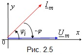

Сдвиг фаз между двумя гармоническими функциями – это разность начальных фаз двух синусоидальных функций, например, функций напряжения u1 и u2, т.е.
φu = φu1 – Ψu2.(2.4)
Сдвиг фаз между напряжением u(t) и током i(t) на неразветвленном участке цепи или на её входе обозначают греческой буквой φ, т. е. φ = Ψu – Ψi. Сдвиг фаз φ – алгебраическая величина: знак угла φ на временных диаграммах определяют по правилу, изложенному для начальных фаз: отрезок на оси абсцисс проводят от нулевого значения напряжения u(t) к ближайшему нулевому значению тока i(t) (рис.2.4а и в), а на векторных диаграммах – по направлению отсчёта угла φ: от вектора тока Im к вектору напряжения Um. Если указанное направление угла φ совпадает с направлением вращения частоты ω векторов на ВД, то угол φ берётся со знаком "+" (рис. 2.4б), если направление отсчета угла φ совпадает с направлением хода часовой стрелки, то угол φ берётся со знаком "−". (рис. 2.4г).

П р и м е ч а н и е. При вычерчивании любого вектора в плоскости отсчёт начальной фазы всегда ведут от положительного направления полуоси абсцисс. Если, например, начальная фаза напряжения Ψu = 0, то вектор Um направляют по оси ox, а вектор тока Im − в соответствии с его начальной фазой Ψi (рис. 2.5). В этом случае угол сдвига фаз
φ = Ψu − Ψi и Ψi = −φ.(2.5).